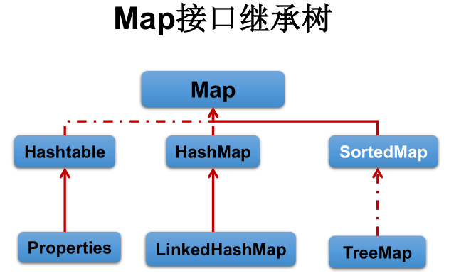
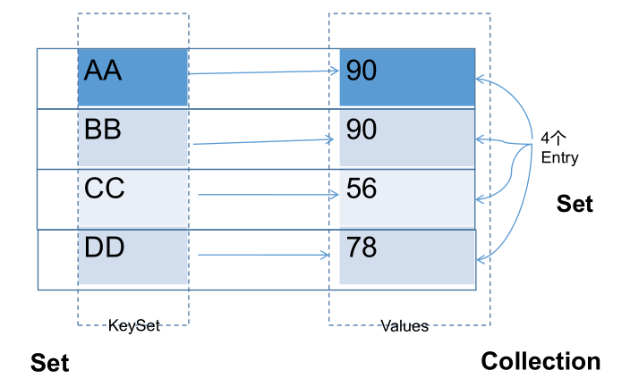
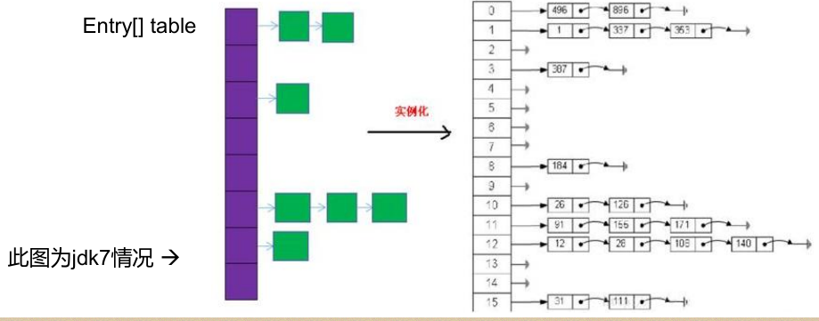
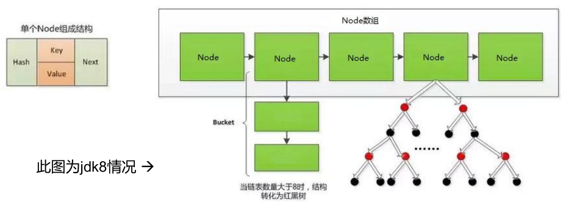

Map map = new HashMap();
//map.put(..,..)省略
System.out.println("map的所有key:");
Set keys = map.keySet();// HashSet
for (Object key : keys) {
System.out.println(key + "->" + map.get(key));
}
System.out.println("map的所有的value：");
Collection values = map.values();
Iterator iter = values.iterator();
while (iter.hasNext()) {
System.out.println(iter.next());
}
System.out.println("map所有的映射关系：");
// 映射关系的类型是Map.Entry类型，它是Map接口的内部接口
Set mappings = map.entrySet();
for (Object mapping : mappings) {
Map.Entry entry = (Map.Entry) mapping;
System.out.println("key是：" + entry.getKey() + "，value是：" + entry.getValue());
}JDK7及以前版本：HashMap是数组+链表结构（即为链地址法）；
JDK8版本发布以后：HashMap是数组+链表+红黑树实现。


添加元素的过程：
向HashMap中添加entry1(key，value)，需要首先计算entry1中key的哈希值(根据key所在类的hashCode()计算得到)，此哈希值经过处理以后，得到在底层Entry[]数组中要存储的位置i。如果位置i上没有元素，则entry1直接添加成功。如果位置i上已经存在entry2(或还有链表存在的entry3，entry4)，则需要通过循环的方法，依次比较entry1中key和其他的entry。如果彼此hash值不同，则直接添加成功。如果hash值不同，继续比较二者是否equals。如果返回值为true，则使用entry1的value去替换equals为true的entry的value。如果遍历一遍以后，发现所有的equals返回都为false,则entry1仍可添加成功。entry1指向原有的entry元素。
HashMap 的扩容：
当HashMap中的元素越来越多的时候，hash冲突的几率也就越来越高，因为数组的长度是固定的。所以为了提高查询的效率，就要对HashMap的数组进行扩容，而在HashMap数组扩容之后，最消耗性能的点就出现了：原数组中的数据必须重新计算其在新数组中的位置，并放进去，这就是resize。
那么HashMap 什么时候进行扩容呢 ？
当HashMap中的元素个数超过数组大小(数组总大小length,不是数组中个数size)loadFactor 时 ， 就 会 进 行 数 组 扩 容 ， loadFactor 的 默 认 值(DEFAULT_LOAD_FACTOR)为0.75，这是一个折中的取值。也就是说，默认情况下，数组大小(DEFAULT_INITIAL_CAPACITY)为16，那么当HashMap中元素个数超过160.75=12（这个值就是代码中的threshold值，也叫做临界值）的时候，就把数组的大小扩展为 2*16=32，即扩大一倍，然后重新计算每个元素在数组中的位置，而这是一个非常消耗性能的操作，所以如果我们已经预知HashMap中元素的个数，那么预设元素的个数能够有效的提高HashMap的性能。
HashMap的内部存储结构其实是 数组+ 链表+ 树 的结合。当实例化一个HashMap时，会初始化initialCapacity和loadFactor，在put第一对映射关系时，系统会创建一个长度为initialCapacity的Node数组，这个长度在哈希表中被称为容量(Capacity)，在这个数组中可以存放元素的位置我们称之为“桶”(bucket)，每个bucket都有自己的索引，系统可以根据索引快速的查找bucket中的元素。
每个bucket中存储一个元素，即一个Node对象，但每一个Node对象可以带一个引用变量next，用于指向下一个元素，因此，在一个桶中，就有可能生成一个Node链。也可能是一个一个TreeNode对象，每一个TreeNode对象可以有两个叶子结点left和right，因此，在一个桶中，就有可能生成一个TreeNode树。而新添加的元素作为链表的last，或树的叶子结点。
那么HashMap什么时候进行扩容和树形化呢 ？
当HashMap中的元素个数超过数组大小(数组总大小length,不是数组中个数size)loadFactor 时 ， 就 会 进 行 数 组 扩 容 ， loadFactor 的 默 认 值(DEFAULT_LOAD_FACTOR)为0.75，这是一个折中的取值。也就是说，默认情况下，数组大小(DEFAULT_INITIAL_CAPACITY)为16，那么当HashMap中元素个数超过160.75=12（这个值就是代码中的threshold值，也叫做临界值）的时候，就把数组的大小扩展为 2*16=32，即扩大一倍，然后重新计算每个元素在数组中的位置，而这是一个非常消耗性能的操作，所以如果我们已经预知HashMap中元素的个数，那么预设元素的个数能够有效的提高HashMap的性能。
当HashMap中的其中一个链的对象个数如果达到了8个，此时如果capacity没有达到64，那么HashMap会先扩容解决，如果已经达到了64，那么这个链会变成树，结点类型由Node变成TreeNode类型。当然，如果当映射关系被移除后，下次resize方法时判断树的结点个数低于6个，也会把树再转为链表。
/** HashMap的底层实现原理？以jdk7为例说明：
* HashMap map = new HashMap():
* 在实例化以后，底层创建了长度是16的一维数组Entry[] table。
* ...可能已经执行过多次put...
* map.put(key1,value1):
* 首先，调用key1所在类的hashCode()计算key1哈希值，此哈希值经过某种算法计算以后，得到在Entry数组中的存放位置。
* 如果此位置上的数据为空，此时的key1-value1添加成功。 ----情况1
* 如果此位置上的数据不为空，(意味着此位置上存在一个或多个数据(以链表形式存在)),比较key1和已经存在的一个或多个数据
* 的哈希值：
* 如果key1的哈希值与已经存在的数据的哈希值都不相同，此时key1-value1添加成功。----情况2
* 如果key1的哈希值和已经存在的某一个数据(key2-value2)的哈希值相同，继续比较：调用key1所在类的equals(key2)方法，比较：
* 如果equals()返回false:此时key1-value1添加成功。----情况3
* 如果equals()返回true:使用value1替换value2。
*
* 补充：关于情况2和情况3：此时key1-value1和原来的数据以链表的方式存储。
*
* 在不断的添加过程中，会涉及到扩容问题，当超出临界值(且要存放的位置非空)时，扩容。默认的扩容方式：扩容为原来容量的2倍，并将原有的数据复制过来。
*
* jdk8 相较于jdk7在底层实现方面的不同：
* 1. new HashMap():底层没有创建一个长度为16的数组
* 2. jdk 8底层的数组是：Node[],而非Entry[]
* 3. 首次调用put()方法时，底层创建长度为16的数组
* 4. jdk7底层结构只有：数组+链表。jdk8中底层结构：数组+链表+红黑树。
* 4.1 形成链表时，七上八下（jdk7:新的元素指向旧的元素。jdk8：旧的元素指向新的元素）
4.2 当数组的某一个索引位置上的元素以链表形式存在的数据个数 > 8 且当前数组的长度 > 64时，此时此索引位置上的所数据改为使用红黑树存储。
*
* DEFAULT_INITIAL_CAPACITY : HashMap的默认容量，16
* DEFAULT_LOAD_FACTOR：HashMap的默认加载因子：0.75
* threshold：扩容的临界值，=容量*填充因子：16 * 0.75 => 12
* TREEIFY_THRESHOLD：Bucket中链表长度大于该默认值，转化为红黑树:8
* MIN_TREEIFY_CAPACITY：桶中的Node被树化时最小的hash表容量:64
*/与LinkedHashSet类似，LinkedHashMap 可以维护 Map 的迭代顺序：迭代顺序与 Key-Value 对的插入顺序一致。
HashMap中的内部类：Node
static class Node<K,V> implements Map.Entry<K,V> {
final int hash;
final K key;
V value;
Node<K,V> next;
}LinkedHashMap中的内部类：Entry
static class Entry<K,V> extends HashMap.Node<K,V> {
Entry<K,V> before, after;
Entry(int hash, K key, V value, Node<K,V> next) {
super(hash, key, value, next);
}
}Properties 类是 Hashtable 的子类，该对象用于处理属性文件；
由于属性文件里的 key、value 都是字符串类型，所以 Properties 里的 key和 value 都是字符串类型；
存取数据时，建议使用setProperty(String key,String value)方法和getProperty(String key)方法。
Properties pros = new Properties();
pros.load(new FileInputStream("jdbc.properties"));
String user = pros.getProperty("user");
System.out.println(user);